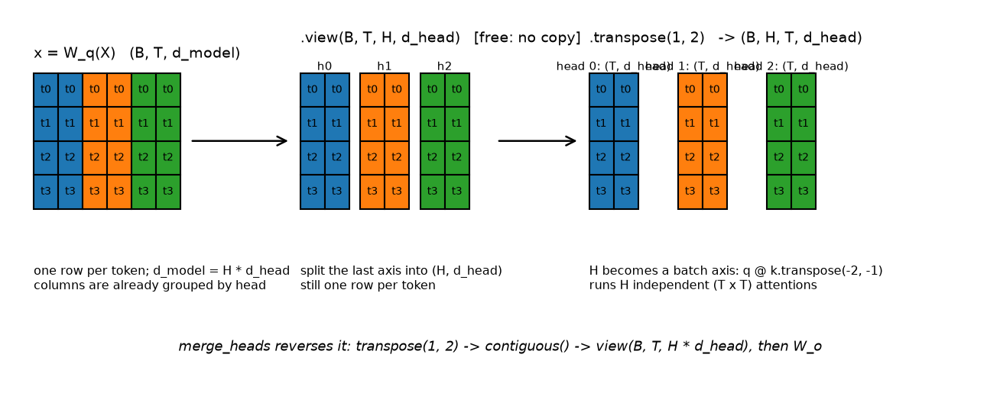

Attention mathematics¶
Why this matters at staff level. "Implement multi-head attention" is the most-asked coding question in ML interviews, and the follow-ups ("make it causal", "add a padding mask", "what does it cost in FLOPs and memory", "why \(\sqrt{d_k}\)", "derive the backward pass") are where senior candidates separate from staff candidates. Everyone can recite \(\softmax(QK^\top/\sqrt{d_k})V\). Far fewer can write it with correct shapes in one pass, say why the scale factor is \(\sqrt{d_k}\) and not \(d_k\), explain what
-infdoes to a fully masked row in fp16, or count the FLOPs per layer without looking anything up.
TL;DR, the interview card¶
- Input \(X \in \R^{T\times d}\), one token per row. Three projections: \(Q = XW_Q\), \(K = XW_K\), \(V = XW_V\) with \(W_Q, W_K \in \R^{d\times d_k}\), \(W_V \in \R^{d\times d_v}\).
- Scores \(S = QK^\top/\sqrt{d_k} \in \R^{T\times T}\), weights \(A = \softmax_{\text{rows}}(S)\), output \(Y = AV \in \R^{T\times d_v}\).
- \(\sqrt{d_k}\) comes from the variance of a dot product: for i.i.d. zero-mean unit-variance components, \(\Var[q\cdot k] = d_k\), so unscaled scores have standard deviation \(\sqrt{d_k}\) and the softmax saturates as \(d_k\) grows. Dividing by \(\sqrt{d_k}\) restores unit variance.
- Multi-head: \(\text{head}_i = \text{Attention}(XW_i^Q, XW_i^K, XW_i^V)\), \(\text{MHA}(X) = \text{Concat}(\text{head}_1,\dots,\text{head}_H)W^O\), with \(d_{head} = d/H\) so total cost matches single-head at width \(d\).
- Shapes to say out loud:
(B, T, d) --Linear--> (B, T, d) --view--> (B, T, H, d_head) --transpose--> (B, H, T, d_head), then attention, then transpose back,contiguous, view to(B, T, d), then \(W^O\). - Causal masking sets \(S_{ij} = -\infty\) for \(j > i\) before the softmax, so \(e^{-\infty} = 0\) and masked positions get exactly zero weight. Masking after the softmax breaks normalisation.
- In fp16 use
torch.finfo(dtype).minrather thanfloat('-inf'): a fully masked row produces NaN with-infand a harmless uniform row withfinfo.min.-1e9overflows fp16 to-inf. - Cost per layer (batch \(B\), length \(T\), width \(d\), all heads together): \(8BTd^2\) FLOPs for the four projections, \(4BT^2d\) for \(QK^\top\) and \(AV\). The \(T^2\) term dominates once \(T > 2d\).
- Memory: the attention matrix is \(B H T^2\) elements, independent of \(d_{head}\). At \(B{=}8\), \(H{=}32\), \(T{=}4096\) in bf16 that is 8.6 GB per layer, which is why FlashAttention exists.
- Backward pass: \(dV = A^\top\,dY\); \(dA = dY\,V^\top\); \(dS = A\odot(dA - \text{rowsum}(dA\odot A))\); \(dQ = dS\,K/\sqrt{d_k}\); \(dK = dS^\top Q/\sqrt{d_k}\).
- Cross-attention takes \(Q\) from one sequence and \(K, V\) from another. Output length always equals the query length.
- Attention is Nadaraya-Watson kernel regression with kernel \(\kappa(q,k) = \exp(q\cdot k/\sqrt{d_k})\) and normalisation over the keys.
1. Intuition first¶
Every token wants to gather information from other tokens, and which other tokens matter depends on content, not on position. In "the animal didn't cross the street because it was too tired", resolving "it" requires looking at "animal". In "...because it was too wide", the same word must look at "street". A fixed connection pattern like a convolution cannot do this. The weights have to be computed from the data.
Attention computes them with a similarity score. Each token emits three vectors:
- a query \(q_i\), meaning "here is what I am looking for",
- a key \(k_j\), meaning "here is what I contain",
- a value \(v_j\), meaning "here is what I will give you if you attend to me".
Token \(i\) scores every token \(j\) by \(q_i\cdot k_j\), normalises the scores into a probability distribution, and takes the corresponding weighted average of values.
Work through a \(T=3\), \(d_k=2\) example by hand. Let
Then \(QK^\top = \begin{bmatrix}1&0&1\\0&1&1\\1&1&2\end{bmatrix}\), and after dividing by \(\sqrt{2}\approx 1.414\) the first row is \((0.707, 0, 0.707)\). Softmax of that row is \((0.422, 0.208, 0.370)\), summing to 1. The first output row is
Token 1's query \((1,0)\) matched token 1's key and token 3's key (both have a 1 in the first coordinate) and ignored token 2. The output is a blend of their values, weighted by how well they matched.
Two structural facts about this example get tested in interviews. The output is a convex combination of value rows, so its norm is bounded by the largest value row no matter how long the sequence is. And if you permute the rows of \(K\) and \(V\) together, the output is unchanged: attention has no idea what order the tokens are in. Order has to be injected, which is chapter 5.
2. The math¶
2.1 Notation and shapes¶
Row-major throughout, matching NumPy and PyTorch. One example per row.
| Symbol | Shape | Meaning |
|---|---|---|
| \(X\) | \(T\times d\) | input, one token embedding per row |
| \(W_Q, W_K\) | \(d\times d_k\) | query and key projections |
| \(W_V\) | \(d\times d_v\) | value projection |
| \(Q = XW_Q\) | \(T\times d_k\) | queries |
| \(K = XW_K\) | \(T\times d_k\) | keys |
| \(V = XW_V\) | \(T\times d_v\) | values |
| \(S = QK^\top/\sqrt{d_k}\) | \(T\times T\) | scores, \(S_{ij}\) = how much \(i\) attends to \(j\) |
| \(A = \softmax_{\text{rows}}(S)\) | \(T\times T\) | weights, each row sums to 1 |
| \(Y = AV\) | \(T\times d_v\) | output, one row per query |
| \(W^O\) | \(d_v H\times d\) | output projection after concatenating heads |
\(Q\) and \(K\) must share \(d_k\) because they meet in an inner product. \(V\) does not: \(d_v\) can be anything, and setting \(d_v = d_k\) is a convention, not a requirement.
The core equation:
Row \(i\) of the result is \(\sum_j A_{ij} v_j\) with \(\sum_j A_{ij} = 1\).
2.2 Reading the equation as three operations¶
\(QK^\top\) is \(T^2\) inner products, one per (query, key) pair. Each costs \(2d_k\) FLOPs, so the matmul is \(2T^2d_k\).
The softmax runs along the last axis, one independent distribution per query row. Getting the axis wrong is the most common implementation bug, and it is silent: the code runs, the loss goes down slowly, and the model is worse than it should be. Normalising down columns would mean "how much of key \(j\)'s mass goes to query \(i\)", which is not what attention means.
\(AV\) mixes value rows. Each output row is a weighted average over \(T\) value rows, costing \(2Td_v\) per row and \(2T^2d_v\) overall.
2.3 Why divide by \(\sqrt{d_k}\)¶
Model the components of \(q\) and \(k\) as independent, zero mean, unit variance. This is roughly what you get at initialisation with standard schemes and LayerNorm'd inputs. The score is
Expectation:
Variance, using independence across \(m\) and \(\Var[q_mk_m] = \E[q_m^2]\E[k_m^2] - (\E[q_m]\E[k_m])^2 = 1\):
So the typical magnitude of an unscaled score is \(\sqrt{d_k}\). At \(d_k = 64\) scores are spread over roughly \(\pm 8\); at \(d_k = 128\), roughly \(\pm 11\). Feed that into a softmax and the gaps between the largest score and the rest are large, so the distribution is nearly one-hot.
Dividing by \(\sqrt{d_k}\) gives \(\Var[s/\sqrt{d_k}] = 1\) regardless of \(d_k\), so the score distribution at initialisation looks the same at every head width.
Why saturation is a problem is a gradient argument. For a softmax with output \(p\), the Jacobian is \(\diag(p) - pp^\top\). If \(p\) is nearly one-hot, say \(p \approx e_1\), then \(\diag(p) - pp^\top \approx 0\): every entry vanishes. The gradient with respect to the scores is \(dS = A\odot(dA - \text{rowsum}(dA\odot A))\), and with \(A\) one-hot both terms cancel to near zero. No gradient reaches \(W_Q\) or \(W_K\), and the attention pattern is frozen at whatever the random initialisation produced.
Why \(\sqrt{d_k}\) rather than \(d_k\)
You want to normalise the standard deviation of the score, not its variance. Dividing by \(d_k\) would give \(\Var = 1/d_k\), shrinking scores toward zero as \(d_k\) grows, and a softmax over near-equal scores is the uniform distribution: every token attends equally to every token, which carries no information either. \(\sqrt{d_k}\) is the unique power that makes the score distribution \(d_k\)-independent.
A quick sanity check you can run in an interview: with \(d_k = 64\) and Gaussian entries, the max of \(T = 512\) unscaled scores is around \(\sqrt{2 d_k \ln T} \approx 28\), while the mean is 0. After scaling it is around 3.5, which is a peaked but not saturated softmax.
2.4 Softmax saturation and entropy collapse¶
Define the attention entropy for query \(i\) as \(H_i = -\sum_j A_{ij}\log A_{ij}\). Uniform attention over \(T\) keys gives \(H = \log T\); one-hot gives \(H = 0\).
Entropy collapse is the failure mode where \(H_i \to 0\) for most \(i\) early in training. It happens when score magnitudes grow, and score magnitudes grow when \(\lVert W_Q\rVert\) and \(\lVert W_K\rVert\) grow, which is what an optimiser does when peaked attention lowers the loss locally. Once collapsed, the Jacobian argument above says the attention pattern stops receiving gradient, so it never recovers. Symptoms: training loss plateaus early, and attention maps show every query attending to one or two positions (often position 0).
Three interventions are used in practice. Warmup keeps early updates small so scores do not grow before the rest of the model is doing useful work. QK-LayerNorm (normalising \(Q\) and \(K\) before the product) bounds score magnitude directly, and appears in several recent large models. Weight decay on \(W_Q, W_K\) limits growth. The scale factor \(1/\sqrt{d_k}\) handles the initialisation, not the training dynamics; it stops the problem from existing at step 0 but does not prevent it at step 10,000.
The opposite failure, uniform attention that never sharpens, shows up as \(H_i \approx \log T\) throughout training and usually means the scores are too small (over-aggressive normalisation, or a bug where the scale is applied twice).
2.5 Masking¶
Two different masks, both applied to \(S\) before the softmax.
Causal mask. For autoregressive generation, position \(i\) may not see position \(j > i\), or training would leak the answer. Set
so \(e^{S_{ij}} = 0\) and \(A_{ij} = 0\) exactly, while the remaining entries renormalise over the allowed set. Mask before the softmax, never after: zeroing \(A_{ij}\) after normalisation leaves the row summing to less than 1, so the output is scaled down by an amount that varies per row, and the model sees an inconsistent operation at each position.
The mask makes training with teacher forcing correct in one parallel pass. Row \(i\) of \(Y\) depends only on rows \(\le i\) of the input, so all \(T\) next-token predictions can be computed from one forward pass over the gold sequence.
Padding mask. Batches contain sequences of different lengths, padded to a common \(T\). Padding positions must not be attended to as keys, or their (arbitrary) embeddings contaminate the output. The mask is per-batch-element and applies to columns: \(S_{ij} \leftarrow -\infty\) whenever key \(j\) is padding. It broadcasts as \((B, 1, 1, T_k)\) against scores of shape \((B, H, T_q, T_k)\).
Padding as a query is a different matter. Those rows produce output that will be discarded, so their values do not matter, but they must not produce NaN. A query row that is fully masked has every score \(-\infty\); the softmax computes \(e^{-\infty - (-\infty)} = e^{\text{NaN}}\), and NaN propagates through the whole batch on the backward pass.
-inf versus finfo.min in fp16
Three options and their failure modes:
float('-inf'): correct math, produces NaN on fully masked rows, and NaN in one row poisons gradients for the entire batch.-1e9: a common choice in fp32 code. In fp16 the largest finite value is 65504, so-1e9overflows to-infand you inherit the NaN problem. Silent, because the overflow happens inside the mask fill.torch.finfo(scores.dtype).min:-65504in fp16,-3.4e38in fp32. A fully masked row becomes uniform rather than NaN, and for real rows \(e^{-65504 - s_{\max}}\) underflows to 0 as intended.
Our apply_mask uses finfo(dtype).min for this reason. The test
test_apply_mask_uses_finite_min_and_softmax_has_no_nan checks the fp16 case directly.
2.6 Self-attention, multi-head attention, cross-attention¶
Self-attention derives \(Q\), \(K\), \(V\) from the same \(X\). Every position builds its representation from every position including itself. Path length between any two tokens is 1, compared with \(O(|i-j|)\) in an RNN and \(O(|i-j|/w)\) in a stack of width-\(w\) convolutions.
Multi-head attention runs \(H\) attentions in parallel on \(d_{head} = d/H\)-dimensional subspaces and concatenates:
One attention pattern per head means one relation per head. Empirically heads specialise: some attend to the previous token, some to syntactic dependents, some to delimiters. A single head of width \(d\) has the same parameter count and nearly the same FLOP count, but can only produce one distribution over positions per query, so it must average conflicting relations together.
The parameter count does not change with \(H\). Setting \(d_{head} = d/H\) means the \(H\) matrices
\(W_i^Q \in \R^{d\times d_{head}}\) stack into one \(W^Q \in \R^{d\times d}\), which is why the
implementation uses a single nn.Linear(d, d) per role and splits the result. The FLOPs for
\(QK^\top\) and \(AV\) are also unchanged: \(H\) heads each doing \(2T^2d_{head}\) work totals \(2T^2d\).
Cross-attention takes \(Q\) from stream A and \(K, V\) from stream B:
Output shape is \((T_X, d)\), always the query's length. This is the mechanism behind encoder-decoder models (decoder queries, encoder keys and values, chapter 4), behind vision-language models (text queries, image patch keys and values, Part VIII ch. 4), and behind DETR-style detection heads (object queries, image feature keys and values, Part VIII ch. 2). The same three lines of code serve all three.
2.7 Attention as kernel smoothing¶
Write the output row for query \(q\) over keys \(\{k_j\}\) and values \(\{v_j\}\):
That is exactly Nadaraya-Watson kernel regression: a locally weighted average of "observations" \(v_j\) with weights given by a kernel evaluated between the query point and the "training inputs" \(k_j\). Attention is kernel regression whose kernel is learned (through \(W_Q, W_K\)) and whose support set is the current sequence.
The view is useful for two reasons. It explains why attention generalises across sequence lengths: adding more keys adds more observations to a regression, and the normalisation keeps the output in the convex hull. And it connects to the linear-attention literature: if you replace \(\exp(q\cdot k)\) with a factorisable kernel \(\phi(q)^\top\phi(k)\), you can reassociate \((\phi(Q)\phi(K)^\top)V\) into \(\phi(Q)(\phi(K)^\top V)\) and get \(O(T)\) complexity, which is the basis of Performer and friends (Part VI ch. 3).
2.8 The backward pass¶
Derive it once and you own it. Let \(L\) be the loss and \(dY = \partial L/\partial Y \in \R^{T\times d_v}\).
Through \(Y = AV\). For a matrix product \(Y = AV\), the standard results are \(dA = dY\,V^\top\) and \(dV = A^\top\,dY\). Check the shapes: \(dA\) is \((T\times d_v)(d_v\times T) = T\times T\), and \(dV\) is \((T\times T)(T\times d_v) = T\times d_v\).
Through the softmax. Each row is independent, so work with one row \(a = \softmax(s)\), \(a, s \in \R^T\). The Jacobian is
which in matrix form is \(\diag(a) - aa^\top\). Then
Factor out \(a_j\):
Applied row-wise to the full matrix, with \(\langle da, a\rangle\) becoming a row-wise sum:
Two things worth noticing. The computation needs only \(A\) and \(dA\), not \(S\), which is why FlashAttention can recompute \(A\) in the backward pass from the saved row log-sum-exp instead of storing the \(T\times T\) matrix. And the subtracted term is a scalar per row, so the operation is cheap: one elementwise multiply, one row reduction, one subtract, one multiply.
Through the scale and the score matmul. \(S = QK^\top/\sqrt{d_k}\), so the gradient picks up the same constant, and the two matmul rules give
Shapes: \(dQ\) is \((T\times T)(T\times d_k) = T\times d_k\) and \(dK\) is \((T\times T)(T\times d_k) = T\times d_k\). The transpose on \(dS\) for \(dK\) is the detail people drop under pressure; the shape check catches it.
Through the masks. A mask is a constant additive term of \(-\infty\) (or finfo.min), so its
gradient is zero, which the forward zeros in \(A\) already enforce: \(A_{ij} = 0\) implies
\(dS_{ij} = 0\) from the formula above. No special handling is needed in the backward pass.
Backward FLOPs are roughly twice the forward: five matmuls of the same sizes (\(dV\), \(dA\), \(dQ\), \(dK\), and the recomputation if you use FlashAttention) against two in the forward. The usual \(6N\) versus \(2N\) accounting in chapter 4 §2.6 comes from exactly this ratio.
2.9 Cost: FLOPs and memory¶
Count a matmul \((m\times k)(k\times n)\) as \(2mkn\) FLOPs (one multiply and one add per multiply-accumulate). For one attention layer, batch \(B\), length \(T\), model width \(d\), all \(H\) heads together:
| Operation | Shape | FLOPs |
|---|---|---|
| \(Q = XW_Q\) | \((BT\times d)(d\times d)\) | \(2BTd^2\) |
| \(K = XW_K\) | same | \(2BTd^2\) |
| \(V = XW_V\) | same | \(2BTd^2\) |
| \(QK^\top\) | \(H\) times \((T\times d_{head})(d_{head}\times T)\) | \(2BT^2d\) |
| \(AV\) | \(H\) times \((T\times T)(T\times d_{head})\) | \(2BT^2d\) |
| output \(W^O\) | \((BT\times d)(d\times d)\) | \(2BTd^2\) |
The two terms cross at \(T = 2d\). For GPT-2 small (\(d = 768\)) at \(T = 1024\), projections dominate: \(8\cdot1024\cdot768^2 = 4.8\) GFLOP versus \(4\cdot1024^2\cdot768 = 3.2\) GFLOP per sequence. At \(T = 8192\) with the same \(d\), the quadratic term is 6.5x the projections. Long context is expensive because of this term and nothing else.
Memory tells a different story. The attention matrix \(A\) has \(BHT^2\) entries and does not depend on \(d_{head}\):
| \(B\) | \(H\) | \(T\) | bytes (bf16) |
|---|---|---|---|
| 1 | 12 | 1024 | 25 MB |
| 8 | 32 | 4096 | 8.6 GB |
| 8 | 32 | 32768 | 550 GB |
And that is one layer, one tensor, before counting the copy saved for the backward pass. Storing \(A\) is what makes naive attention impossible at long context, and why FlashAttention's contribution is about materialisation rather than FLOPs (Part VI ch. 4).
A useful rule for interviews: attention is memory-bandwidth-bound at inference and compute-bound at training with long sequences. The arithmetic intensity of the softmax is about 1 FLOP per byte, against 300 needed to saturate an H100.
3. Implementation¶
3.1 Scaled dot-product attention¶
def scaled_dot_product_attention(
q: torch.Tensor,
k: torch.Tensor,
v: torch.Tensor,
mask: torch.Tensor | None = None,
dropout_p: float = 0.0,
training: bool = False,
bias: torch.Tensor | None = None,
) -> tuple[torch.Tensor, torch.Tensor]:
"""Attention for already-projected, already-split heads.
Args:
q: (B, H, T_q, d_head) queries.
k: (B, H, T_k, d_head) keys.
v: (B, H, T_k, d_head) values.
mask: bool broadcastable to (B, H, T_q, T_k), True = attend.
dropout_p: dropout on the attention weights (only if ``training``).
bias: optional additive score bias broadcastable to (B, H, T_q, T_k)
(T5 relative-position bias, ALiBi) added *before* masking and softmax.
Returns:
out: (B, H, T_q, d_head), attn: (B, H, T_q, T_k) post-softmax weights.
"""
d_head = q.shape[-1]
scores = q @ k.transpose(-2, -1) / math.sqrt(d_head) # (B, H, T_q, d_head) @ (B, H, d_head, T_k) -> (B, H, T_q, T_k)
if bias is not None:
scores = scores + bias # (B, H, T_q, T_k) relative-position / ALiBi bias
scores = apply_mask(scores, mask) # (B, H, T_q, T_k)
attn = F.softmax(scores, dim=-1) # (B, H, T_q, T_k) rows sum to 1
if dropout_p > 0.0 and training:
attn = F.dropout(attn, p=dropout_p, training=True) # (B, H, T_q, T_k)
out = attn @ v # (B, H, T_q, T_k) @ (B, H, T_k, d_head) -> (B, H, T_q, d_head)
return out, attn
The function takes already-projected, already-split heads, so it works unchanged for
self-attention, cross-attention, and cached decoding. T_q and T_k are deliberately different
symbols in the shape comments: they are equal for self-attention, unequal for cross-attention, and
unequal during cached decode where T_q = 1.
q @ k.transpose(-2, -1) transposes the last two axes and leaves (B, H) as batch axes, so
PyTorch dispatches one batched matmul over \(BH\) independent \((T_q\times d_{head})(d_{head}\times T_k)\)
products. F.softmax(scores, dim=-1) normalises over keys.
The mask helpers:
def causal_mask(T: int, device: torch.device | None = None) -> torch.Tensor:
"""Lower-triangular mask: query i may attend key j iff j <= i.
Returns:
(1, 1, T, T) bool, broadcastable over batch and heads.
"""
allowed = torch.tril(torch.ones(T, T, dtype=torch.bool, device=device)) # (T, T)
return allowed[None, None, :, :] # (1, 1, T, T)
def padding_mask(is_pad: torch.Tensor) -> torch.Tensor:
"""Key-padding mask from a (B, T_k) bool tensor that is True at PAD tokens.
Returns:
(B, 1, 1, T_k) bool, True where the key is a real token (attention allowed).
"""
return (~is_pad)[:, None, None, :] # (B, 1, 1, T_k)
def apply_mask(scores: torch.Tensor, mask: torch.Tensor | None) -> torch.Tensor:
"""Fill disallowed positions with the most negative finite value of the dtype.
scores: (B, H, T_q, T_k) pre-softmax; mask broadcastable bool (True = keep).
"""
if mask is None:
return scores
return scores.masked_fill(~mask, torch.finfo(scores.dtype).min) # (B, H, T_q, T_k)
causal_mask returns (1, 1, T, T) so it broadcasts across batch and heads without allocating
\(BH\) copies. padding_mask returns (B, 1, 1, T_k), broadcasting across heads and query
positions. combine_masks ANDs them. The convention (True means attend) is worth fixing in your
head, because PyTorch's own APIs are inconsistent: nn.MultiheadAttention's attn_mask uses True
for blocked positions, while F.scaled_dot_product_attention's boolean attn_mask uses True for
allowed. Our tests exercise both directions against the reference ops.
3.2 Multi-head attention¶
The reshape is the part interviewers watch:
def split_heads(x: torch.Tensor, n_heads: int) -> torch.Tensor:
"""(B, T, d_model) -> (B, H, T, d_head).
Step 1 view: (B, T, d_model) -> (B, T, H, d_head) [no data movement]
Step 2 transpose: (B, T, H, d_head) -> (B, H, T, d_head) [so matmuls batch over (B, H)]
"""
B, T, d_model = x.shape
d_head = d_model // n_heads
x = x.view(B, T, n_heads, d_head) # (B, T, H, d_head)
return x.transpose(1, 2) # (B, H, T, d_head)
def merge_heads(x: torch.Tensor) -> torch.Tensor:
"""(B, H, T, d_head) -> (B, T, d_model). The concat in Concat(head_1..head_H)."""
B, H, T, d_head = x.shape
x = x.transpose(1, 2) # (B, T, H, d_head)
return x.contiguous().view(B, T, H * d_head) # (B, T, d_model)

Left: after the linear projection, the d_model columns are already grouped by head, because
\(W^Q\) is the horizontal concatenation of the per-head \(W_i^Q\). Middle: view splits the last axis
into (H, d_head) with no data movement. Right: transpose(1, 2) moves \(H\) next to the batch axis
so the matmuls run as \(BH\) independent attentions.
Three details that come up in review:
view requires the tensor to be contiguous, which the output of a Linear is, so the split is
free. After transpose(1, 2) the tensor is no longer contiguous, which is why merge_heads calls
.contiguous() before its view. Skipping it raises a runtime error; using reshape instead
hides the copy.
Doing view(B, H, T, d_head) directly on (B, T, d) would be wrong, and silently so: it would
interleave tokens and heads, giving head 0 the first \(T/H\) tokens instead of the first \(d_{head}\)
channels of every token. The shapes match, the loss trains, the model is broken. The fix is to
always go through (B, T, H, d_head) first.
The full module, with three separate projections:
class MultiHeadAttention(nn.Module):
"""Self- or cross-attention depending on what is passed as ``x_kv``.
forward(x_q, x_kv, mask, cache) -> (out (B, T_q, d_model), attn (B, H, T_q, T_k)).
"""
def __init__(self, d_model: int, n_heads: int, dropout: float = 0.0, bias: bool = True) -> None:
super().__init__()
if d_model % n_heads != 0:
raise ValueError("d_model must be divisible by n_heads")
self.d_model, self.n_heads, self.d_head = d_model, n_heads, d_model // n_heads
self.W_q = nn.Linear(d_model, d_model, bias=bias) # W^Q: (d_model, d_model) = H blocks of (d_model, d_head)
self.W_k = nn.Linear(d_model, d_model, bias=bias) # W^K
self.W_v = nn.Linear(d_model, d_model, bias=bias) # W^V
self.W_o = nn.Linear(d_model, d_model, bias=bias) # W^O
self.dropout_p = dropout
self.resid_dropout = nn.Dropout(dropout)
def forward(
self,
x_q: torch.Tensor,
x_kv: torch.Tensor,
mask: torch.Tensor | None = None,
cache: LayerKVCache | None = None,
rope: tuple[torch.Tensor, torch.Tensor] | None = None,
bias: torch.Tensor | None = None,
) -> tuple[torch.Tensor, torch.Tensor]:
"""x_q: (B, T_q, d_model); x_kv: (B, T_k, d_model). Self-attention when x_kv is x_q.
With ``cache`` the keys/values of ``x_kv`` are appended to the cache and attention
runs over the whole cached prefix (T_k becomes cache.length).
``rope`` = (cos, sin), each (T_q, d_head) for the *new* positions, rotates q and k
(self-attention only). ``bias`` is an additive score bias (T5 / ALiBi).
"""
q = split_heads(self.W_q(x_q), self.n_heads) # (B, T_q, d) -> (B, H, T_q, d_head)
k = split_heads(self.W_k(x_kv), self.n_heads) # (B, H, T_k, d_head)
v = split_heads(self.W_v(x_kv), self.n_heads) # (B, H, T_k, d_head)
if rope is not None:
cos, sin = rope
q = apply_rotary(q, cos, sin) # (B, H, T_q, d_head) rotated by absolute position
k = apply_rotary(k, cos, sin) # (B, H, T_k, d_head)
if cache is not None:
k, v = cache.update(k, v) # (B, H, T_cache, d_head) each; T_cache = old length + T_k
out, attn = scaled_dot_product_attention(q, k, v, mask, self.dropout_p, self.training, bias) # (B, H, T_q, d_head), (B, H, T_q, T_k)
out = merge_heads(out) # (B, T_q, d_model)
out = self.resid_dropout(self.W_o(out)) # (B, T_q, d_model)
return out, attn
W_q, W_k, W_v are separate nn.Linear layers on purpose. Production code fuses them into one
nn.Linear(d, 3d) because one GEMM beats three, but in an interview a fused projection invites
"which slice is the key?" and gives you nothing to point at. Write three, mention the fusion.
Cross-attention is the same module with a different second argument:
class CrossAttention(nn.Module):
"""Queries from the decoder stream ``x``; keys and values from ``context`` (encoder output,
image tokens, retrieved passages...). Output has the query's length, always."""
def __init__(self, d_model: int, n_heads: int, dropout: float = 0.0) -> None:
super().__init__()
self.mha = MultiHeadAttention(d_model, n_heads, dropout)
def forward(self, x: torch.Tensor, context: torch.Tensor, context_mask: torch.Tensor | None = None) -> tuple[torch.Tensor, torch.Tensor]:
"""x: (B, T_q, d), context: (B, T_ctx, d), context_mask: (B, 1, 1, T_ctx) -> (B, T_q, d), (B, H, T_q, T_ctx)."""
return self.mha(x, context, context_mask)
There is no new mathematics here. Passing x_kv = context is the entire difference between
self-attention and cross-attention, and being able to say that plainly is the answer to "how does a
VLM attach an image to a language model".
3.3 Forward and backward in NumPy¶
Autograd hides the derivation, so write it once by hand:
def softmax_rows(S: np.ndarray) -> np.ndarray:
"""Row-wise softmax with max-subtraction. S: (T_q, T_k) -> (T_q, T_k)."""
S = S - S.max(axis=-1, keepdims=True) # (T_q, T_k) shift for stability
E = np.exp(S) # (T_q, T_k)
return E / E.sum(axis=-1, keepdims=True) # (T_q, T_k)
def attention_forward(Q: np.ndarray, K: np.ndarray, V: np.ndarray, mask: np.ndarray | None = None) -> tuple[np.ndarray, dict]:
"""Single-head attention forward.
Args:
Q: (T_q, d_k), K: (T_k, d_k), V: (T_k, d_v); mask: (T_q, T_k) bool, True = attend.
Returns:
Y: (T_q, d_v) and a cache for ``attention_backward``.
"""
d_k = Q.shape[-1]
S = Q @ K.T / np.sqrt(d_k) # (T_q, d_k) @ (d_k, T_k) -> (T_q, T_k)
if mask is not None:
S = np.where(mask, S, -1e30) # (T_q, T_k) masked scores get zero weight
A = softmax_rows(S) # (T_q, T_k)
Y = A @ V # (T_q, T_k) @ (T_k, d_v) -> (T_q, d_v)
return Y, {"Q": Q, "K": K, "V": V, "A": A, "d_k": d_k}
def attention_backward(dY: np.ndarray, cache: dict) -> tuple[np.ndarray, np.ndarray, np.ndarray]:
"""Single-head attention backward.
Args:
dY: (T_q, d_v) upstream gradient.
Returns:
dQ: (T_q, d_k), dK: (T_k, d_k), dV: (T_k, d_v).
"""
Q, K, V, A, d_k = cache["Q"], cache["K"], cache["V"], cache["A"], cache["d_k"]
dV = A.T @ dY # (T_k, T_q) @ (T_q, d_v) -> (T_k, d_v)
dA = dY @ V.T # (T_q, d_v) @ (d_v, T_k) -> (T_q, T_k)
# softmax backward, row by row: dS_i = A_i * (dA_i - <dA_i, A_i>)
dS = A * (dA - (dA * A).sum(axis=-1, keepdims=True)) # (T_q, T_k)
dS = dS / np.sqrt(d_k) # (T_q, T_k) undo the scale
dQ = dS @ K # (T_q, T_k) @ (T_k, d_k) -> (T_q, d_k)
dK = dS.T @ Q # (T_k, T_q) @ (T_q, d_k) -> (T_k, d_k)
return dQ, dK, dV
attention_backward is §2.8 transcribed line by line. The line
is the softmax Jacobian applied row-wise without ever forming the \(T\times T\times T\) tensor of
per-row Jacobians. If you find yourself building np.diag(a) - np.outer(a, a) inside a loop, you
have the right maths and the wrong implementation.
How you'd test it. Build the same computation in PyTorch with requires_grad=True, backprop a
random upstream gradient, and compare dQ, dK, dV against autograd elementwise. That is
test_attention_backward_numpy_matches_autograd, and it catches the transposition error in \(dK\)
immediately. For the forward path, compare against
torch.nn.functional.scaled_dot_product_attention, including its is_causal=True mode.
Full implementations
"""Scaled dot-product attention: PyTorch forward, and NumPy forward + backward.
S = Q K^T / sqrt(d_k) (T_q, T_k) scores
A = softmax_rows(S) (T_q, T_k) each row sums to 1
Y = A V (T_q, d_v)
Backward (per head; derived in chapter 03):
dV = A^T dY (T_k, d_v)
dA = dY V^T (T_q, T_k)
dS = A * (dA - rowsum(dA * A)) (T_q, T_k) softmax Jacobian applied row-wise
dQ = dS K / sqrt(d_k) (T_q, d_k)
dK = dS^T Q / sqrt(d_k) (T_k, d_k)
"""
from __future__ import annotations
import math
import numpy as np
import torch
from torch.nn import functional as F
from .masks import apply_mask
# ---------------------------------------------------------------------------
# PyTorch (batched, multi-head)
# ---------------------------------------------------------------------------
def scaled_dot_product_attention(
q: torch.Tensor,
k: torch.Tensor,
v: torch.Tensor,
mask: torch.Tensor | None = None,
dropout_p: float = 0.0,
training: bool = False,
bias: torch.Tensor | None = None,
) -> tuple[torch.Tensor, torch.Tensor]:
"""Attention for already-projected, already-split heads.
Args:
q: (B, H, T_q, d_head) queries.
k: (B, H, T_k, d_head) keys.
v: (B, H, T_k, d_head) values.
mask: bool broadcastable to (B, H, T_q, T_k), True = attend.
dropout_p: dropout on the attention weights (only if ``training``).
bias: optional additive score bias broadcastable to (B, H, T_q, T_k)
(T5 relative-position bias, ALiBi) added *before* masking and softmax.
Returns:
out: (B, H, T_q, d_head), attn: (B, H, T_q, T_k) post-softmax weights.
"""
d_head = q.shape[-1]
scores = q @ k.transpose(-2, -1) / math.sqrt(d_head) # (B, H, T_q, d_head) @ (B, H, d_head, T_k) -> (B, H, T_q, T_k)
if bias is not None:
scores = scores + bias # (B, H, T_q, T_k) relative-position / ALiBi bias
scores = apply_mask(scores, mask) # (B, H, T_q, T_k)
attn = F.softmax(scores, dim=-1) # (B, H, T_q, T_k) rows sum to 1
if dropout_p > 0.0 and training:
attn = F.dropout(attn, p=dropout_p, training=True) # (B, H, T_q, T_k)
out = attn @ v # (B, H, T_q, T_k) @ (B, H, T_k, d_head) -> (B, H, T_q, d_head)
return out, attn
# ---------------------------------------------------------------------------
# NumPy (single head, single sequence) -- forward and backward by hand
# ---------------------------------------------------------------------------
def softmax_rows(S: np.ndarray) -> np.ndarray:
"""Row-wise softmax with max-subtraction. S: (T_q, T_k) -> (T_q, T_k)."""
S = S - S.max(axis=-1, keepdims=True) # (T_q, T_k) shift for stability
E = np.exp(S) # (T_q, T_k)
return E / E.sum(axis=-1, keepdims=True) # (T_q, T_k)
def attention_forward(Q: np.ndarray, K: np.ndarray, V: np.ndarray, mask: np.ndarray | None = None) -> tuple[np.ndarray, dict]:
"""Single-head attention forward.
Args:
Q: (T_q, d_k), K: (T_k, d_k), V: (T_k, d_v); mask: (T_q, T_k) bool, True = attend.
Returns:
Y: (T_q, d_v) and a cache for ``attention_backward``.
"""
d_k = Q.shape[-1]
S = Q @ K.T / np.sqrt(d_k) # (T_q, d_k) @ (d_k, T_k) -> (T_q, T_k)
if mask is not None:
S = np.where(mask, S, -1e30) # (T_q, T_k) masked scores get zero weight
A = softmax_rows(S) # (T_q, T_k)
Y = A @ V # (T_q, T_k) @ (T_k, d_v) -> (T_q, d_v)
return Y, {"Q": Q, "K": K, "V": V, "A": A, "d_k": d_k}
def attention_backward(dY: np.ndarray, cache: dict) -> tuple[np.ndarray, np.ndarray, np.ndarray]:
"""Single-head attention backward.
Args:
dY: (T_q, d_v) upstream gradient.
Returns:
dQ: (T_q, d_k), dK: (T_k, d_k), dV: (T_k, d_v).
"""
Q, K, V, A, d_k = cache["Q"], cache["K"], cache["V"], cache["A"], cache["d_k"]
dV = A.T @ dY # (T_k, T_q) @ (T_q, d_v) -> (T_k, d_v)
dA = dY @ V.T # (T_q, d_v) @ (d_v, T_k) -> (T_q, T_k)
# softmax backward, row by row: dS_i = A_i * (dA_i - <dA_i, A_i>)
dS = A * (dA - (dA * A).sum(axis=-1, keepdims=True)) # (T_q, T_k)
dS = dS / np.sqrt(d_k) # (T_q, T_k) undo the scale
dQ = dS @ K # (T_q, T_k) @ (T_k, d_k) -> (T_q, d_k)
dK = dS.T @ Q # (T_k, T_q) @ (T_q, d_k) -> (T_k, d_k)
return dQ, dK, dV
def attention_flops(B: int, T: int, d_model: int) -> dict[str, int]:
"""Forward FLOPs of one multi-head attention layer (all heads together).
2*B*T*d^2 per projection (Q, K, V, O) and 2*B*T^2*d each for QK^T and AV.
(A matmul of (m, k) @ (k, n) costs 2*m*k*n FLOPs: one multiply and one add.)
"""
proj = 4 * 2 * B * T * d_model * d_model
scores = 2 * B * T * T * d_model
weighted_sum = 2 * B * T * T * d_model
return {"projections": proj, "qk_t": scores, "av": weighted_sum, "total": proj + scores + weighted_sum}
"""Attention masks. Convention used throughout the book: a mask is a boolean tensor
that is **True where attention is allowed** and broadcastable to the score tensor
(B, H, T_q, T_k). Masked positions receive the most negative finite value of the
score dtype *before* the softmax, so they get exactly zero weight after it.
Why not -inf? A fully masked row (a padding *query* attending to nothing) turns
-inf into NaN through softmax(-inf - (-inf)); ``finfo.min`` gives a uniform row
instead, which is harmless because padded outputs are discarded. In fp16 the
"large negative number" must be representable: -1e9 overflows to -inf, -1e4 is
what old BERT code used, ``torch.finfo(dtype).min`` is the portable choice.
"""
from __future__ import annotations
import torch
def causal_mask(T: int, device: torch.device | None = None) -> torch.Tensor:
"""Lower-triangular mask: query i may attend key j iff j <= i.
Returns:
(1, 1, T, T) bool, broadcastable over batch and heads.
"""
allowed = torch.tril(torch.ones(T, T, dtype=torch.bool, device=device)) # (T, T)
return allowed[None, None, :, :] # (1, 1, T, T)
def causal_mask_with_cache(T_new: int, T_total: int, device: torch.device | None = None) -> torch.Tensor:
"""Causal mask for the last ``T_new`` query positions against ``T_total`` keys.
During cached decoding the queries are positions T_total-T_new .. T_total-1 and the
keys are 0 .. T_total-1. Query at absolute position i may see key j iff j <= i.
Returns:
(1, 1, T_new, T_total) bool.
"""
q_pos = torch.arange(T_total - T_new, T_total, device=device)[:, None] # (T_new, 1)
k_pos = torch.arange(T_total, device=device)[None, :] # (1, T_total)
return (k_pos <= q_pos)[None, None, :, :] # (1, 1, T_new, T_total)
def padding_mask(is_pad: torch.Tensor) -> torch.Tensor:
"""Key-padding mask from a (B, T_k) bool tensor that is True at PAD tokens.
Returns:
(B, 1, 1, T_k) bool, True where the key is a real token (attention allowed).
"""
return (~is_pad)[:, None, None, :] # (B, 1, 1, T_k)
def combine_masks(*masks: torch.Tensor | None) -> torch.Tensor | None:
"""Logical AND of broadcastable masks (None entries are ignored)."""
out: torch.Tensor | None = None
for m in masks:
if m is None:
continue
out = m if out is None else (out & m)
return out
def apply_mask(scores: torch.Tensor, mask: torch.Tensor | None) -> torch.Tensor:
"""Fill disallowed positions with the most negative finite value of the dtype.
scores: (B, H, T_q, T_k) pre-softmax; mask broadcastable bool (True = keep).
"""
if mask is None:
return scores
return scores.masked_fill(~mask, torch.finfo(scores.dtype).min) # (B, H, T_q, T_k)
"""Multi-head attention with three separate Q/K/V projections (never a fused 3d one).
head_i = Attention(X W_i^Q, X_kv W_i^K, X_kv W_i^V) i = 1..H
MHA(X) = Concat(head_1, ..., head_H) W^O
Implementation trick: one ``nn.Linear(d_model, d_model)`` for Q computes all H heads at
once because W^Q = [W_1^Q | ... | W_H^Q]; splitting the last dimension into
(H, d_head) and moving H next to the batch axis gives the per-head tensors.
"""
from __future__ import annotations
import torch
from torch import nn
from .attention import scaled_dot_product_attention
from .kv_cache import LayerKVCache
from .positional import apply_rotary
def split_heads(x: torch.Tensor, n_heads: int) -> torch.Tensor:
"""(B, T, d_model) -> (B, H, T, d_head).
Step 1 view: (B, T, d_model) -> (B, T, H, d_head) [no data movement]
Step 2 transpose: (B, T, H, d_head) -> (B, H, T, d_head) [so matmuls batch over (B, H)]
"""
B, T, d_model = x.shape
d_head = d_model // n_heads
x = x.view(B, T, n_heads, d_head) # (B, T, H, d_head)
return x.transpose(1, 2) # (B, H, T, d_head)
def merge_heads(x: torch.Tensor) -> torch.Tensor:
"""(B, H, T, d_head) -> (B, T, d_model). The concat in Concat(head_1..head_H)."""
B, H, T, d_head = x.shape
x = x.transpose(1, 2) # (B, T, H, d_head)
return x.contiguous().view(B, T, H * d_head) # (B, T, d_model)
class MultiHeadAttention(nn.Module):
"""Self- or cross-attention depending on what is passed as ``x_kv``.
forward(x_q, x_kv, mask, cache) -> (out (B, T_q, d_model), attn (B, H, T_q, T_k)).
"""
def __init__(self, d_model: int, n_heads: int, dropout: float = 0.0, bias: bool = True) -> None:
super().__init__()
if d_model % n_heads != 0:
raise ValueError("d_model must be divisible by n_heads")
self.d_model, self.n_heads, self.d_head = d_model, n_heads, d_model // n_heads
self.W_q = nn.Linear(d_model, d_model, bias=bias) # W^Q: (d_model, d_model) = H blocks of (d_model, d_head)
self.W_k = nn.Linear(d_model, d_model, bias=bias) # W^K
self.W_v = nn.Linear(d_model, d_model, bias=bias) # W^V
self.W_o = nn.Linear(d_model, d_model, bias=bias) # W^O
self.dropout_p = dropout
self.resid_dropout = nn.Dropout(dropout)
def forward(
self,
x_q: torch.Tensor,
x_kv: torch.Tensor,
mask: torch.Tensor | None = None,
cache: LayerKVCache | None = None,
rope: tuple[torch.Tensor, torch.Tensor] | None = None,
bias: torch.Tensor | None = None,
) -> tuple[torch.Tensor, torch.Tensor]:
"""x_q: (B, T_q, d_model); x_kv: (B, T_k, d_model). Self-attention when x_kv is x_q.
With ``cache`` the keys/values of ``x_kv`` are appended to the cache and attention
runs over the whole cached prefix (T_k becomes cache.length).
``rope`` = (cos, sin), each (T_q, d_head) for the *new* positions, rotates q and k
(self-attention only). ``bias`` is an additive score bias (T5 / ALiBi).
"""
q = split_heads(self.W_q(x_q), self.n_heads) # (B, T_q, d) -> (B, H, T_q, d_head)
k = split_heads(self.W_k(x_kv), self.n_heads) # (B, H, T_k, d_head)
v = split_heads(self.W_v(x_kv), self.n_heads) # (B, H, T_k, d_head)
if rope is not None:
cos, sin = rope
q = apply_rotary(q, cos, sin) # (B, H, T_q, d_head) rotated by absolute position
k = apply_rotary(k, cos, sin) # (B, H, T_k, d_head)
if cache is not None:
k, v = cache.update(k, v) # (B, H, T_cache, d_head) each; T_cache = old length + T_k
out, attn = scaled_dot_product_attention(q, k, v, mask, self.dropout_p, self.training, bias) # (B, H, T_q, d_head), (B, H, T_q, T_k)
out = merge_heads(out) # (B, T_q, d_model)
out = self.resid_dropout(self.W_o(out)) # (B, T_q, d_model)
return out, attn
class CrossAttention(nn.Module):
"""Queries from the decoder stream ``x``; keys and values from ``context`` (encoder output,
image tokens, retrieved passages...). Output has the query's length, always."""
def __init__(self, d_model: int, n_heads: int, dropout: float = 0.0) -> None:
super().__init__()
self.mha = MultiHeadAttention(d_model, n_heads, dropout)
def forward(self, x: torch.Tensor, context: torch.Tensor, context_mask: torch.Tensor | None = None) -> tuple[torch.Tensor, torch.Tensor]:
"""x: (B, T_q, d), context: (B, T_ctx, d), context_mask: (B, 1, 1, T_ctx) -> (B, T_q, d), (B, H, T_q, T_ctx)."""
return self.mha(x, context, context_mask)
Retype by hand¶
This is the chapter to drill until it is automatic. The first three rows are the ones that appear in real interviews.
| Symbol | File | Target time |
|---|---|---|
scaled_dot_product_attention |
src/mlbook/transformer/attention.py |
8 minutes |
split_heads, merge_heads, MultiHeadAttention |
src/mlbook/transformer/multihead.py |
20 minutes |
causal_mask, padding_mask, apply_mask |
src/mlbook/transformer/masks.py |
6 minutes |
attention_forward + attention_backward (NumPy) |
src/mlbook/transformer/attention.py |
25 minutes |
CrossAttention |
src/mlbook/transformer/multihead.py |
3 minutes |
Fine to just read: softmax_rows, attention_flops, causal_mask_with_cache (drill it with the
KV cache in chapter 4 instead), combine_masks.
Check with
python -m pytest tests/test_transformer_attention.py tests/test_transformer_masks.py tests/test_transformer_multihead.py -q
(test_scaled_dot_product_attention_matches_torch_reference,
test_scaled_dot_product_attention_causal_matches_torch_is_causal,
test_split_and_merge_heads_roundtrip_and_layout,
test_multihead_attention_matches_torch_nn_multiheadattention,
test_apply_mask_uses_finite_min_and_softmax_has_no_nan,
test_attention_backward_numpy_matches_autograd).
Target for the combined drill, multi-head attention with a causal mask from a blank file: 20 minutes, running clean against the tests, with shapes stated aloud as you write them.
4. Systems view: cost, failure modes, trade-offs¶
Where the time goes. For a GPT-2-small-shaped layer (\(d = 768\), \(H = 12\)) at \(T = 1024\), \(B = 8\): projections 38 GFLOP, attention matmuls 26 GFLOP, and the softmax about 0.1 GFLOP but touching 400 MB of memory. On an A100 the matmuls run near peak and the softmax runs at memory bandwidth, so the softmax takes a disproportionate share of wall time. Fusing the mask, softmax and dropout into one kernel is the first optimisation anyone applies, and FlashAttention is the complete version of that idea.
Failure modes.
| Symptom | Cause | Check |
|---|---|---|
| Loss decreases then plateaus high; attention maps all point at position 0 | Entropy collapse | Log per-head attention entropy; add warmup or QK-norm |
| NaN loss after adding padding | -inf or -1e9 on a fully masked row in fp16 |
Use finfo(dtype).min; assert no all-False mask row |
| Model scores well on teacher-forced loss, generates garbage | Causal mask missing or off by one | Perturb token \(i\), assert outputs \(<i\) unchanged |
| Results depend on batch composition | Missing key-padding mask | Compare batched and single-example outputs |
| Attention weights do not sum to 1 | Masking applied after softmax | Assert attn.sum(-1) == 1 |
| OOM at long context | Materialised \(BHT^2\) matrix | FlashAttention or chunked attention |
| Silently worse model, shapes all correct | view(B, H, T, d_head) without the intermediate (B, T, H, d_head) |
Test split_heads layout explicitly |
When to use what.
| Situation | Choice | Reason |
|---|---|---|
| Writing attention in an interview | Explicit scaled_dot_product_attention with three Linears |
Interviewer needs to see the shapes and the mask |
| Production training, \(T \le 2048\) | F.scaled_dot_product_attention |
Dispatches to a fused kernel, exact, no code to maintain |
| Production training, \(T \ge 4096\) | FlashAttention-2/3 via SDPA backend | Avoids materialising \(A\); the only way to fit memory |
| Inference decode | Cached attention with \(T_q = 1\) | Quadratic term disappears; see ch. 4 |
| Cross-modal fusion | Cross-attention, queries from the target modality | Output length follows the queries, which is what you want |
| \(T\) in the hundreds of thousands | Sparse, sliding-window, or linear attention | Exact attention is quadratic and there is no way around it |
The 1-hop property, quantified. Maximum path length between two positions is \(O(1)\) for self-attention, \(O(T)\) for a recurrent layer, and \(O(\log_w T)\) for a stack of dilated convolutions with width \(w\). Per-layer complexity is \(O(T^2d)\), \(O(Td^2)\) and \(O(wTd^2)\) respectively. Attention buys path length with compute, which is the trade the original paper made and the one every efficient-attention paper tries to renegotiate.
5. In production¶
Google, the Transformer replaced recurrence in translation (2017)
Vaswani et al. built an encoder-decoder with no recurrence and no convolution, on the argument that the sequential dependency of RNNs, not their FLOP count, was the binding constraint on training throughput. Reported results: 28.4 BLEU on WMT'14 English-German and 41.8 on English-French, both above the previous best, with the base model trained in 12 hours on 8 GPUs. The design choices that survive unchanged nine years later are the scaled dot product, multi-head attention, and the residual-plus-norm block. Source: Attention Is All You Need.
Google Search, BERT for query understanding (2019)
Google deployed BERT to English search queries in October 2019, describing it as the largest change to ranking since RankBrain, affecting about 10% of US English queries at launch. The published example is "2019 brazil traveler to usa need a visa", where the word "to" determines the direction of travel. Bag-of-words and earlier neural rankers dropped that relation; a bidirectional attention model keeps it because every token attends to every other token with content-dependent weights. Source: Google, "Understanding searches better than ever before".
Tesla, attention to fuse eight cameras into one 3D space (AI Day 2021)
Tesla's perception stack projects per-camera features into a shared vector space using a transformer whose queries are positions in the output raster and whose keys and values come from image features across all eight cameras. The talk describes replacing an earlier hand-written C++ "occupancy tracker" with this learned fusion, because projecting 2D detections into 3D by geometry alone breaks on road slope and occlusion. It is cross-attention doing exactly what §2.6 describes: queries from the target representation, keys and values from the source representation, output shaped by the queries. Source: Tesla AI Day 2021 full presentation; see also Part XI ch. 2.
Tri Dao et al., FlashAttention made the memory cost the target (2022)
FlashAttention keeps the mathematics of this chapter exactly and changes where the intermediate lives: tile \(Q\), stream \(K\) and \(V\), keep the running softmax statistics in SRAM, and never write the \(T\times T\) matrix to HBM. Reported: 15% end-to-end speedup on BERT-large at \(T=512\), 3x on GPT-2 at \(T=1024\), and the ability to train at context lengths that previously did not fit. The backward pass recomputes \(A\) from the saved row log-sum-exp, which works because of the property noted in §2.8: the softmax backward needs \(A\) and \(dA\), not \(S\). Source: FlashAttention.
6. Interview questions and strong answers¶
Implement multi-head attention. Talk me through the shapes.
Start from \((B, T, d)\). Three separate linears give \(Q\), \(K\), \(V\), each \((B, T, d)\). Split
heads: view(B, T, H, d_head) then transpose(1, 2) to \((B, H, T, d_{head})\), going through
the intermediate shape so head \(i\) owns channels \([i\,d_{head}, (i+1)d_{head})\) of every token
rather than a block of tokens. Scores are q @ k.transpose(-2, -1) / sqrt(d_head), shape
\((B, H, T_q, T_k)\); apply the mask with finfo(dtype).min; softmax over the last axis; multiply
by \(V\) to get \((B, H, T_q, d_{head})\). Merge heads with transpose(1, 2).contiguous().view(B, T, d)
and apply \(W^O\). I would write three separate projections for clarity and note that production
code fuses them into one \((d, 3d)\) GEMM.
Staff-level follow-up, "why is .contiguous() needed there and not in split_heads?"
A view requires the requested shape to be compatible with the existing strides. The output of
a Linear is contiguous, so splitting the last axis is a pure metadata change. After
transpose(1, 2) the strides are permuted, so the flattening view in merge_heads has no
valid stride interpretation and needs a copy. reshape would insert that copy silently, which
I prefer to make explicit.
Why divide by \(\sqrt{d_k}\)?
Take \(q\) and \(k\) with i.i.d. zero-mean unit-variance components, which is roughly what you have at initialisation. Then \(q\cdot k\) has mean 0 and variance \(d_k\), because the \(d_k\) product terms are independent with unit variance each. So unscaled scores have standard deviation \(\sqrt{d_k}\), which grows with head width, and a softmax over scores spread across \(\pm\sqrt{d_k}\) is nearly one-hot for \(d_k\) of any practical size. The softmax Jacobian is \(\diag(a) - aa^\top\), which goes to zero as \(a\) becomes one-hot, so \(W_Q\) and \(W_K\) stop receiving gradient. Dividing by \(\sqrt{d_k}\) makes the score variance 1 independent of head width.
Staff-level follow-up, "why not divide by \(d_k\), or learn the temperature?" Dividing by \(d_k\) over-corrects: variance becomes \(1/d_k\), scores collapse toward each other, and the softmax approaches uniform, which carries no information. A learned temperature is defensible and some models do learn a per-head scale; the risk is that the optimiser drives it toward saturation, which is one of the mechanisms behind entropy collapse. QK-LayerNorm is the currently favoured way to control score magnitude during training rather than just at init.
Derive the backward pass of attention.
With \(Y = AV\): \(dV = A^\top dY\) and \(dA = dY V^\top\), both by the standard matmul rule, and both checkable by shape. Through the softmax, rows are independent, so for one row \(a = \softmax(s)\) the Jacobian is \(\diag(a) - aa^\top\), giving \(ds = a\odot(da - \langle da, a\rangle)\). Row-wise over the matrix: \(dS = A\odot(dA - \text{rowsum}(dA\odot A))\). Then \(S = QK^\top/\sqrt{d_k}\) gives \(dQ = dS\,K/\sqrt{d_k}\) and \(dK = dS^\top Q/\sqrt{d_k}\). Masked entries need no special treatment because \(A_{ij} = 0\) forces \(dS_{ij} = 0\).
Staff-level follow-up, "what does this tell you about memory in the backward pass?" The softmax backward needs \(A\) and \(dA\) but never \(S\), and \(A\) can be reconstructed from \(Q\), \(K\) and the per-row log-sum-exp, which is \(T\) numbers per head rather than \(T^2\). That is exactly what FlashAttention stores, and it turns the backward pass from memory-bound to compute-bound.
You add padding to your batches and the loss becomes NaN. What happened?
Most likely a fully masked query row. Padding positions are masked as keys, and if you also
mask padded rows as queries, that row has every score at \(-\infty\). The stable softmax
subtracts the row max, which is also \(-\infty\), so you compute \(-\infty - (-\infty) =\) NaN, and
the NaN propagates to every parameter through the backward pass even though the row's output
would have been discarded. The fix is torch.finfo(dtype).min instead of -inf, which makes
the row uniform and harmless. If the code uses -1e9 and runs in fp16, that is the same bug by
a different route: 1e9 exceeds fp16's max of 65504, so it becomes -inf on cast.
Staff-level follow-up, "how would you catch this in CI?" Assert no mask row is entirely
False before the softmax, and add a regression test that runs a fully-padded sequence through
the layer in fp16 and checks torch.isfinite(out).all(). We have that as
test_apply_mask_uses_finite_min_and_softmax_has_no_nan.
How many FLOPs and how much memory does one attention layer cost?
Counting a \((m\times k)(k\times n)\) matmul as \(2mkn\): four projections at \(2BTd^2\) each gives \(8BTd^2\), and \(QK^\top\) and \(AV\) give \(2BT^2d\) each, so \(4BT^2d\). Total \(8BTd^2 + 4BT^2d\), with the terms crossing at \(T = 2d\). Memory is dominated by the attention matrix at \(BHT^2\) elements, independent of \(d_{head}\): at \(B=8\), \(H=32\), \(T=4096\) in bf16 that is 8.6 GB for one layer. FLOPs are the reason long context costs money; the materialised matrix is the reason it used to be impossible.
Staff-level follow-up, "at what context length does attention dominate a full Transformer layer?" The FFN costs about \(16BTd^2\) with the standard \(4d\) hidden size, so the layer total is roughly \(24BTd^2 + 4BT^2d\). The attention matmuls overtake everything else when \(4T^2d > 24Td^2\), that is \(T > 6d\). For \(d = 4096\) that is about 24k tokens, which matches the observation that models are FFN-dominated at typical training lengths and attention-dominated at long context.
Why multiple heads instead of one wide head?
One head produces one distribution over positions per query, so if a token needs to attend to its syntactic head and to a coreferent noun at the same time, a single head has to average the two patterns and retrieve a blend of both values. \(H\) heads give \(H\) independent patterns, each operating in its own \(d/H\)-dimensional subspace, concatenated and mixed by \(W^O\). Parameter count and FLOPs are essentially unchanged because \(d_{head} = d/H\).
Staff-level follow-up, "so more heads is always better?" No. As \(H\) grows, \(d_{head}\) shrinks, and the rank of each head's \(QK^\top\) is at most \(d_{head}\), so very narrow heads cannot express fine-grained similarity. Published head-pruning work shows many heads are redundant at inference. The current practice pulls in the opposite direction for a different reason: grouped-query attention reduces the number of distinct K/V heads to shrink the KV cache, keeping query heads plentiful and key/value heads few.
What is cross-attention and where have you used it?
Cross-attention takes queries from one sequence and keys and values from another: \(\softmax(Q_XK_Y^\top/\sqrt{d_k})V_Y\), with output length equal to the query length. It is the mechanism for encoder-decoder translation (decoder queries attend to encoder states), for vision-language models (text queries attend to image patch embeddings), and for DETR-style detection (learned object queries attend to image features). The implementation difference from self-attention is one argument: what you pass as the key/value source.
Staff-level follow-up, "what are the masking implications?" The causal mask applies only to self-attention, because the decoder must not see its own future. Cross-attention is normally unmasked over the source, since the whole source is available, and only needs a key-padding mask for variable-length sources. Getting this backwards, applying a causal mask to cross-attention, produces a model that works but silently ignores most of the encoder.
7. Exercises¶
★ 1. Score statistics. Sample \(Q, K \in \R^{512\times d_k}\) with standard normal entries for \(d_k \in \{8, 64, 512\}\). Report the standard deviation of the entries of \(QK^\top\) and of the attention entropy with and without the \(1/\sqrt{d_k}\) scale.
Solution
Unscaled standard deviations are approximately \(\sqrt{d_k}\): 2.8, 8, 22.6. Entropies without the scale fall from about 5.7 nats (\(\log 512 = 6.24\)) at \(d_k=8\) to near 0 at \(d_k = 512\). With the scale, entropy is around 5.9 nats at every \(d_k\), confirming the derivation: the scale makes the score distribution, and therefore the attention sharpness at initialisation, independent of head width.
★ 2. Mask ordering. Implement a variant that applies the causal mask by zeroing \(A\) after the softmax. Compare outputs against the correct version and explain the difference in terms of row sums.
Solution
Post-softmax zeroing leaves row \(i\) summing to \(\sum_{j\le i}\softmax(S_i)_j < 1\), and the
deficit is largest for small \(i\) (where most of the row is masked). So early positions have
their outputs scaled toward zero by a position-dependent factor, and the first position's
output is scaled by roughly \(1/T\). The model can partly compensate through LayerNorm, which is
why the bug is survivable and therefore easy to miss; the tell is that attn.sum(-1) is not 1.
★ 3. Permutation equivariance. Verify that scaled_dot_product_attention with no mask
satisfies \(\text{Attn}(PQ, PK, PV) = P\,\text{Attn}(Q,K,V)\) for a permutation matrix \(P\). Then add
a causal mask and show it fails.
Solution
Without a mask, permuting queries permutes output rows and permuting keys/values permutes the columns of \(A\) and rows of \(V\) in matching ways, so the weighted sums are unchanged. Adding the causal mask breaks it because the mask is a function of index, not content: after permutation, position \(i\) is allowed to see a different set of tokens. This is the precise sense in which causal masking is the only source of positional information in a Transformer with no positional encoding, and it explains published results showing decoder-only models can learn position without explicit encodings.
★★ 4. Entropy collapse. Train the tiny GPT from chapter 4 on a copy task twice: once normally and once with \(W_Q, W_K\) initialised at 10x scale. Log mean attention entropy per layer every 10 steps.
Solution
The 10x run starts with entropy near 0 and stays there; the loss drops to the unigram baseline and plateaus. The normal run starts near \(\log T\) and decreases smoothly as heads specialise. The collapsed run does not recover, because the softmax Jacobian is near zero when the weights are one-hot, so \(W_Q\) and \(W_K\) receive no gradient to un-sharpen with. This is why warmup matters more for Transformers than for CNNs: the failure is not slow learning but a fixed point the optimiser cannot leave.
★★ 5. Coding exercise: attention with a relative-position bias. Extend
scaled_dot_product_attention to accept a bias \((1, H, T_q, T_k)\) added to the scores before
masking, then verify that the bias gradient is \(dB = dS\), using autograd as the reference.
Solution
The bias is already supported in our implementation (the bias argument), which
chapter 5 uses for T5 bias and ALiBi. The gradient is \(dS\)
unchanged, because \(S' = S + B\) makes \(\partial S'/\partial B\) the identity. The practical
consequence: a learned bias table receives gradient summed over every (query, key) pair mapped
to the same bucket, which is why T5's buckets are effective with only 32 parameters per head.
★★★ 6. Chunked attention without materialising \(A\). Implement attention that processes keys in
blocks of size \(c\), maintaining a running maximum \(m\), running denominator \(\ell\) and running
weighted sum, rescaling by \(e^{m_{\text{old}} - m_{\text{new}}}\) when the maximum increases. Verify
it matches scaled_dot_product_attention to within floating-point tolerance for \(T = 512\), \(c = 64\).
Solution
Keep \(m\) (rowwise max so far), \(\ell\) (rowwise sum of \(e^{s-m}\)) and \(O\) (accumulated \(\sum e^{s-m}v\)). For a new block with scores \(S_b\): \(m' = \max(m, \text{rowmax}(S_b))\), \(\ell' = e^{m-m'}\ell + \text{rowsum}(e^{S_b-m'})\), \(O' = e^{m-m'}O + e^{S_b-m'}V_b\); return \(O/\ell\) at the end. The result is exact up to floating point, because the rescale factor corrects every previously accumulated term for the new maximum. Peak memory is \(O(Tc)\) instead of \(O(T^2)\). This is the online-softmax core of FlashAttention, derived in full in Part VI ch. 4.
References¶
- Vaswani, A. et al. (2017). Attention Is All You Need. arXiv:1706.03762
- Bahdanau, D., Cho, K. & Bengio, Y. (2015). Neural Machine Translation by Jointly Learning to Align and Translate. arXiv:1409.0473
- Tsai, Y.-H. H. et al. (2019). Transformer Dissection: A Unified Understanding of Transformer's Attention via the Lens of Kernel. arXiv:1908.11775
- Dao, T. et al. (2022). FlashAttention: Fast and Memory-Efficient Exact Attention with IO-Awareness. arXiv:2205.14135
- Shazeer, N. (2019). Fast Transformer Decoding: One Write-Head is All You Need. arXiv:1911.02150
- Ainslie, J. et al. (2023). GQA: Training Generalized Multi-Query Transformer Models from Multi-Head Checkpoints. arXiv:2305.13245
- Google (2019). Understanding searches better than ever before. Blog
- Tesla (2021). AI Day 2021. Full presentation